Els informes són dissenys realitzats, igual que els formularis, a partir de taules o consultes, però en aquest cas tenint com a destinació la impressora.
Amb l'Open Base únicament es poden crear informes fent servir l'auxiliar. Encara que en qualsevol moment es poden fer modificacions sobre el disseny de l'informe de forma manual.
Falta la imatge de fer clic sobre l'opció de l'auxiliar:
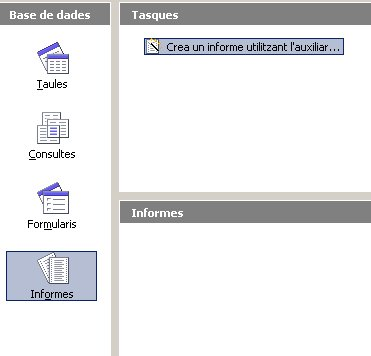
A la següent imatge podeu veure com quedarà l'informe que a continuació crearem amb l'auxiliar.
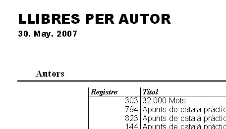
Igual que fèiem amb el formulari el primer que farem serà seleccionar l'origen de les dades, que pot ser una taula o una consulta. En el nostre cas seleccionarem la taula Llibre i els camps que veieu a la imatge.
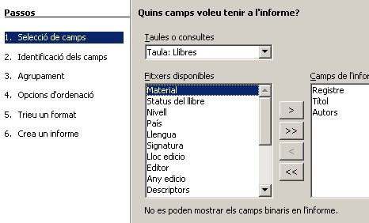
Ara toca identificar els camps, la qual cosa consisteix en posar una
etiqueta als valors dels camps seleccionats que es mostraran a
l'informe. És una opció interessant de posar en casos com els de tenir
noms de camps sense accents, o amb determinades incorreccions
ortogràfiques que interessi mostrar de forma correcta. Així, les
etiquetes mostren no un nom de camp ortogràficament incorrecte, sinó un
textual ortogràficament correcte, per exemple, si mirem la taula
Llibres, podem oberservar que hi ha molts noms de camps que no són
ortogràficament correctes (codi pais, lloc edicio, Any edicio, etc.) i
d'aquesta forma, podem fer que es mostrin correctament en l'informe
imprès.
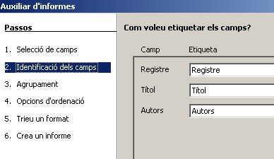
Ara seleccionarem el/els camp/camps que farem servir per agrupar la informació. En el nostre cas volem que la llista dels llibres quedin agrupats per Autor, osigui que l'informe mostrarà el nom d'un autor i després la llista de tots els seus llibres.
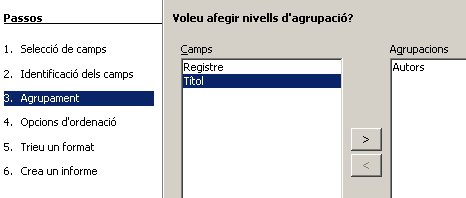
Ara indicarem els camps a partir dels quals s'ordenarà la informació. Com podeu veure el camp Autors ja està seleccionat ja que al ser un camp d'agrupació per defecte ja s'ordena alfabèticament.
Nosaltres seleccionarem el camp Títol per tal que mostri la informació dels llibres de cada autor ordenada.
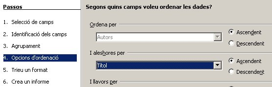
El següent pas és seleccionar l'estil que volem per l'informe. Per això el millor que podem fer és anar seleccionant les diferents opcions de la columna de Format de les dades i Format d'encapçalaments i peus de peus de pàgina i anar veient com queda l'informe a la finestra de darrera on es van aplicant els atributs seleccionats a l'auxiliar sobre l'informe.
Recordeu també de seleccionar l'Orientació del paper.
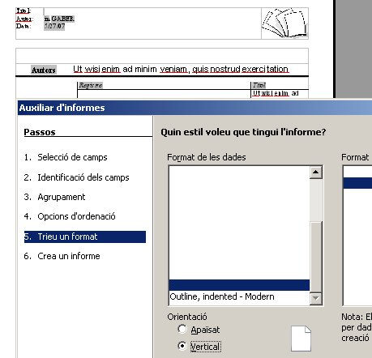
<nota> La majoria dels noms dels formats seleccionables no són visibles. Esperem que en versions posteriors d'aquesta aplicació solucionin aquest detall. </nota>
El sisè pas és indicat el nom de l'informe. Si volem que l'informe
sigui dinàmic (opció per defecte), que significa que l'informe canviï a
mesura que l'origen de les dades es modifica.
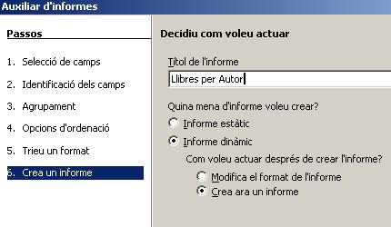
Aquest seria el resultat. Pensa que com que estem treballant amb una taula molt extensa potser que li costi acabar de generar l'informe. Atura la creació de l'informe per poder veure ràpidament el format resultant de l'auxiliar.
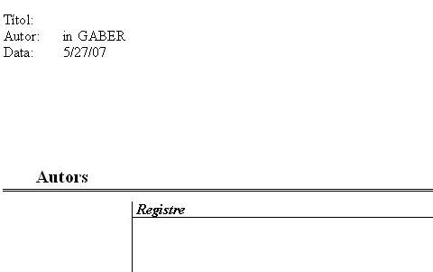
És possible que el resultat obtingut de treballar amb l'auxiliar no sigui del tot satisfactori, aleshores podem Editar l'informe i modificar-lo. Botó dret sobre el nom de l'informe i Editar.
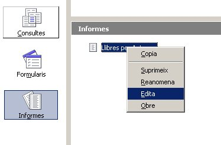
Començarem eliminant el camp Autor i les etiquetes de Títol i Data. Per fer-lo fes un clic sobre l'element i polsa Supr. Ara modifica l'amplada de la columna per visualitzar el Títol dels llibres arrossegant la línia cap a l'esquerra. També escriurem el Títol LLIBRES PER AUTOR fent servir per donar-li format les opcions de la barra d'eines superior.
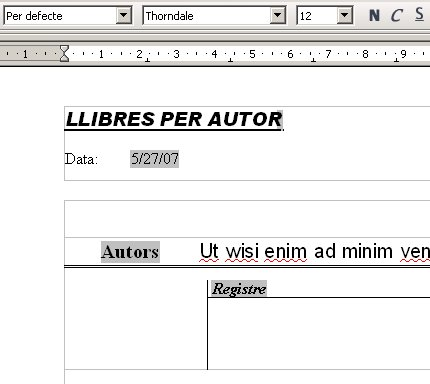
Ara per modificar el format de la data farem un doble clic sobre la data i accedirem a la següent finestra:
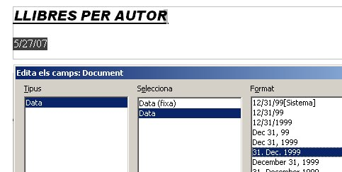
Seleccioneu l'opció de la imatge i accepta. Ara ja anem obtenint l'informe que ens agrada.
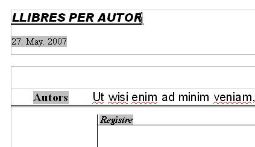
L'Open Base per defecte et crea diferents Capçaleres. Per eliminar-les aneu a l'opció Capçalera del menú Insereix i deseleccioneu totes les opcions marcades.
Tanqueu l'informe i Deseu els canvis.

|
|

|
|